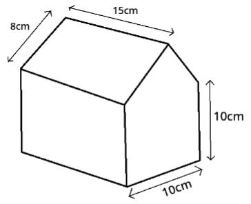
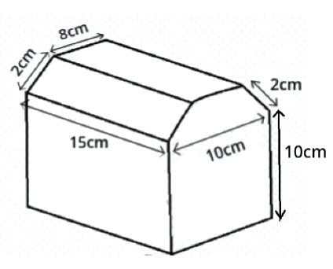
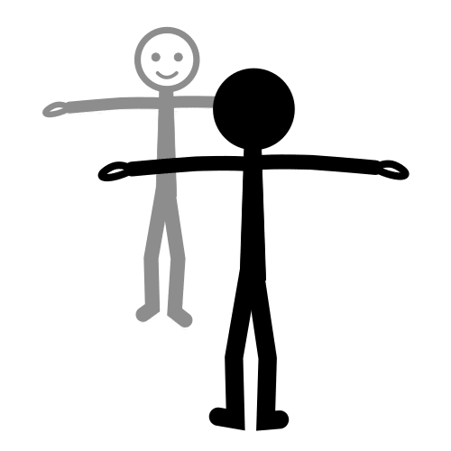

Ya has podido comprobar algunos de los elementos geométricos más comunes que pueden aparecer en tu maqueta.
Ahora vas a ver cómo en tu localidad, o en tu entorno, puedes encontrar diferentes diseños de casetas, construidas en función del espacio disponible, los materiales a utilizar... y, por supuesto, de la creatividad del diseñador.
Estos diseños te van a ayudar a desarrollar tu propio modelo de maqueta.
Seguro que encuentras muchas ideas que despiertan tu imaginación y creatividad para crear una estupenda maqueta de tu caseta de feria.
1. Casetas a nuestro alrededor
Kardia dice: ¿Qué modelos de caseta conoces ya?
¿Conoces algún modelo de caseta?
Sigue adelante y descubrirás algunos que te serán muy familiares, y otros que te sorprenderán.
Antes de comenzar a crear vuestras propias maquetas de caseta, sería conveniente conocer algunos diseños que podemos encontrar en el recinto ferial de nuestra localidad, o bien, en el de alguna población cercana.
Hay diseños muy llamativos y que te van a sorprender.
2. Vuestro primer diseño
Para la siguiente tarea nos agruparemos en pequeños grupos de dos personas. Trabajando conjuntamente lograremos crear un diseño para nuestra maqueta de la caseta de feria.
En la siguiente animación encontrarás algunos modelos de caseta en tres dimensiones, para que observes con claridad todas sus partes y te ayude a entender mejor la actividad grupal que se plantea.
Puedes mover los objetos haciendo click con el botón derecho del ratón.
Formamos parejas de trabajo
Para realizar esta actividad, formaremos grupos de dos personas.
Elección de estructura y formas geométricas
En un primer momento hay que elegir una de las tres formas planteadas.
Seleccionamos colores
A continuación, realizaremos el diseño de la portada y también elegiremos los colores de las misma.
Construyendo nuestro modelo
Ahora tenéis que poner en práctica estos apartados con la siguiente animación. Podéis combinar las distintas opciones y practicar construyendo diferentes modelos.
Y ahora... un paso más
Os presentamos los tres modelos de casetas con sus medidas.
Queremos poner una tela que cubra el techo de nuestra caseta y colocar una tira de adornos en todo el borde del techo. Para ello, necesitaremos realizar algunos cálculos.
Para el modelo de maqueta elegido, ¿seríais capaces de calcular la cantidad de tela necesaria y la longitud de los adornos?
Modelo 1 Modelo 2 Modelo 3

Es momento de que elijáis uno de estos tres modelos para vuestra caseta.
Lectura facilitada
Para realizar un primer modelo de la maqueta, trabajaréis en grupo:
1º El arquitecto elegirá la estructura de la maqueta.
2ºEl diseñador: elegirá y diseñará las formas geométricas planas que usará para la maqueta.
3º El decorador: elegirá los colores y el mobiliario interior.
Posteriormente, comprobarán el resultado de la maqueta que han diseñado.

Definición:
Objeto o idea de referencia para imitarlo o reproducirlo.
Ejemplo:
Aquel cuadro le sirvió de modelo para realizar el suyo.
Apoyo visual
3. ¿Quieres saber más sobre las casetas y la Feria?
¿Sabías que las primeras Ferias en nuestra Comunidad eran Ferias de ganado? Tenían como finalidad la mejora de la economía y del mercado del sector agropecuario.
Hoy en día, las casetas son uno de los elementos fundamentales de las Ferias de nuestra Comunidad. Son recintos cerrados cuya estructura y materiales han ido cambiando y mejorando, utilizándose desde telas y paneles de aglomerado, hasta hacer uso del ladrillo y unas estructuras más estables y sólidas.
La Feria más antigua que se celebra en Andalucía es la de la localidad sevillana de Mairena del Alcor (Sevilla) cuyos orígenes se remontan a 1441 por la concesión del rey Juan II de Castilla a Pedro Ponce de León, quien recibió el encargo de organizar la feria para facilitar la repoblación del lugar y el abastecimiento de productos, así como la movilidad de los ganados de la comarca.
Pulsa sobre ampliar el mapa si quieres mas información
Definición:
Que tiene relación con la agricultura y la ganadería.
Ejemplo:
Tuvimos que realizar un trabajo de investigación sobre las provincias que tenían sectores agropecuarios.
Definición:
Material formado por fragmentos de madera prensados y mezclados con cola.
Ejemplo:
Decidieron que el material más barato era el aglomerado.
Definición:
Grupo de animales que viven juntos.
Ejemplo:
La profesión de aquel hombre era la cría de ganado.


{kind=link}